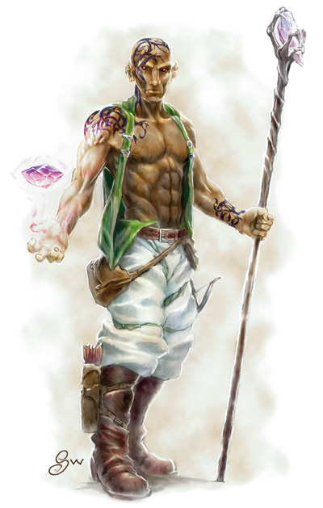
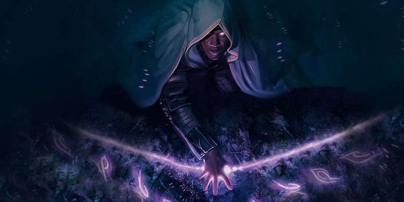

Mystique
Un humain vêtu de vêtements simples marche sur un chemin en forêt. Une bande de gobelins surgit alors des bas-côtés, tout sourire face à leur bonheur de trouver une proie si facile qui fera un bon esclave. Mais leurs sourires se transforment en cris de terreur lorsque le voyageur prend la taille d'un géant et avance vers eux, son bâton devant maintenant une arme mortelle. La milice se met en rangs formés pour se préparer à recevoir la charge des orcs. Ces brutes hurlent leurs cris de guerre et foncent en avant. Mais à leur grande surprise, les humains tiennent le terrain et luttent avec une férocité surprenante. La crainte envahie alors l'esprit des orcs qui, malgré un ennemi bien inférieur, font retraite en courant, sans même avoir remarqué ce demi-elfe calme au milieu de la milice qui coordonnait la résistance. Le baron von Ludwig a toujours été fier de sa grande bibliothèque. Mais il ne savait pas que, chaque soir, un gnome passait les bras chargés de parchemins vierges devant ses gardes pour ensuite recopier copieusement ses documents les mieux gardés. Quand les hommes du duc sont venus l'arrêter en raison de sa relation avec des démons, il ne s'imaginait pas que le scribe gnome qui les accompagnait avait passé plus de temps que lui dans son château au cours de la dernière année.
Ces héros sont tous des mystiques, des adeptes d'une forme étrange et mystérieuse de pouvoir. Les mystiques fuient le monde pour tourner leur regard vers l'intérieur, maîtrisant tout le potentiel de leur esprit et explorant le psychique avant de se retourner vers le monde. Les mystiques sont très rares, et la plupart préfèrent garder la nature de leurs capacités secrètes. En utilisant leur force psychique intérieure, ils peuvent lire les esprits, se fondre dans l'invisibilité, transformer leur corps en acier vivant, et prendre le contrôle du monde physique pour le plier à leur volonté.
Ermite et bannis
Les mystiques sont solitaires. La plupart découvrent les secrets de leur pouvoir à travers de vagues références dans de vieux grimoires ou en côtoyant un maître du pouvoir. Car pour maîtriser leur pouvoir, les mystiques doivent d'abord se maîtriser eux-mêmes. Ils passent des mois, voire des années, dans une contemplation tranquille, explorant leur esprit sans ne rien laisser de côté. Pendant ce temps, ils fuient la société, comme des ermites. Un mystique qui a étudié avec un maître était comme un esclave virtuel, réalisant des tâches banales en échange d'occasionnelles leçons ou d'enseignements cryptiques. Quand les mystiques finissent par maîtriser leur pouvoir, ils reviennent au monde pour élargir leurs horizons et pratiquer leur métier. Certains mystiques préfèrent rester isolés, mais ceux qui deviennent aventuriers ne se contentent pas de rester en marge du monde.
Esprits excentriques
Afin de maintenir la stricte discipline et l'intense connaissance de soi nécessaires pour exploiter leur pouvoir, les mystiques développent diverses pratiques pour garder leur concentration. Ces pratiques se reflètent dans des tabous et des excentricités, de petits comportements étranges qui régissent leurs actions. Ces excentricités inoffensives sont des promesses ou des tics comportementaux qui aident les mystiques à garder leur esprit en bonne santé tout en maintenant un contrôle parfait de leur esprit et de leur corps. Peu d'entre eux se sentent acceptés par la société, et encore veulent s'intégrer à elle. Pour les mystiques, la vie de l'esprit est là où ils se sentent le plus chez eux.
Choisir une excentricité
Afin d'ajouter du relief à votre mystique, définissez les excentricités de votre personnage. Ces comportements n'ont aucun effet sur le jeu, mais votre personnage peut devenir irrité ou bouleversé s'il est forcé de les casser. C'est un excellent outil de jeu de rôle pour ajouter du caractère au jeu. Vous pouvez lancer un dé ou choisir dans le tableau ci-dessous, ou bien créer vos propres excentricités. Choisissez en deux, pour avoir plus de chances d'e vous en servir en jeu. Enfin, pensez au pourquoi votre personnage a ces comportements. Que disent-ils de sa personnalité ou de son historique ? Sont-ils dus à un incident spécifique ou à une croyance ?
| d20 | Excentricités |
| 1 | Vous ne vous coupez jamais les cheveux. |
| 2 | Vous refusez de porter des vêtements d'une couleur spécifique. |
| 3 | Vous ne prononcez jamais votre nom. |
| 4 | Vous ne portez jamais de chaussures. |
| 5 | Vous portez toujours un masque. |
| 6 | Vous teignez vos cheveux en bleu ou vert vif. |
| 7 | Vous changez de nom chaque jour. |
| 8 | Vous n'entrez jamais dans l'eau. |
| 9 | Vous dormez à même le sol |
| 10 | Vous ne buvez jamais d'alcool. |
| 11 | Vous portez un voile qui cache votre visage. |
| 12 | Vous portez toujours un vêtement spécifique. |
| 13 | Vous refusez d'allumer un feu. |
| 14 | Vous refusez d'écrire quoi que ce soit, et utilisez des pictogrammes. |
| 15 | Vous ne vous asseyez jamais sur une chaise, vous restez debout ou vous asseyez au sol. |
| 16 | Vous ne répondez jamais à un autre nom que le vôtre. |
| 17 | Vous écrivez le nom de toutes les créatures que vous tuez, même de celles qui n'ont pas de nom. |
| 18 | Vous ne buvez que de l'eau et ne mangez que des légumes. |
| 19 | Vous dépensez tout l'argent que vous gagnez en moins d'une semaine. |
| 20 | Vous parlez souvent à un compagnon imaginaire, et n'agissez qu'avec son consentement. |
Créer un mystique
Lorsque vous créez un mystique, pensez à l'historique de votre personnage. Comment êtes-vous devenu un mystique ? Qu'est-ce qui vous a attiré vers cette pratique ? Êtes-vous autodidacte ou aviez-vous un maître ? Si vous aviez un maître, comment était votre relation ? Considérez aussi pourquoi vous êtes retourné au monde depuis votre vie d'ermite. Avez-vous laissé quelqu'un ou quelque chose derrière quand vous avez arrêté vos études ? Êtes-vous animé par la vengeance ou une autre motivation ?
Création rapide
Vous pouvez concevoir rapidement un mystique en suivant ces quelques suggestions. En premier lieu, l'Intelligence devrait être votre plus haute valeur de caractéristique, suivie par votre Dextérité et votre Constitution. Ensuite, choisissez l'historique ermite.
Capacités de classe
Points de vie
DV : 1d8 par niveau de mystique
pv au niveau 1 : 8 + votre modificateur de Constitution
pv aux niveaux suivants : 1d8 (ou 5) + votre modificateur de Constitution
Maîtrises
Armures : armures légères
Armes : armes courantes
Outils : aucun
Jets de sauvegarde : Intelligence, Sagesse
Compétences : choisissez deux compétences parmi Arcanes, Histoire, Intuition, Médecine, Nature, Perception et Religion
Équipement
Vous commencez avec l'équipement suivant, en plus de l'équipement accordé par votre historique :
- (a) une lance ou (b) une masse d'armes
- (a) une armure de cuir ou (b) une armure de cuir clouté
- (a) une arbalète légère et 20 carreaux ou (b) une arme courante
- (a) un sac d'érudit ou (b) un sac d'explorateur
Vous pouvez également ignorer l'équipement proposé ci-dessus et celui de votre historique, et acheter 5d4 x 10 po d'équipement.
Niv |
Bonus de maîtrise |
Capacités |
Talents connus |
Disciplines connues |
Points psi |
Limite psi |
| 1 | +2 | Psioniques, Ordre mystique | 1 | 1 | 4 | 2 |
| 2 | +2 | Récupération mystique, Télépathie | 1 | 1 | 6 | 2 |
| 3 | +2 | Capacité de l'Ordre mystique | 2 | 2 | 14 | 3 |
| 4 | +2 | Amélioration de caractéristiques, Force de l'esprit | 2 | 2 | 17 | 3 |
| 5 | +3 | - | 2 | 3 | 27 | 5 |
| 6 | +3 | Capacité de l'Ordre mystique | 2 | 3 | 32 | 5 |
| 7 | +3 | - | 2 | 4 | 38 | 6 |
| 8 | +3 | Amélioration de caractéristiques, Psionique puissant (1d8) | 2 | 4 | 44 | 6 |
| 9 | +4 | - | 2 | 5 | 57 | 7 |
| 10 | +4 | Pouvoir dévorant | 3 | 5 | 64 | 7 |
| 11 | +4 | Maîtrise psionique (1/jour) | 3 | 5 | 64 | 7 |
| 12 | +4 | Amélioration de caractéristiques | 3 | 6 | 64 | 7 |
| 13 | +5 | Maîtrise psionique (2/jour) | 3 | 6 | 64 | 7 |
| 14 | +5 | Capacité de l'Ordre mystique, Psionique puissant (2d8) | 3 | 6 | 64 | 7 |
| 15 | +5 | Maîtrise psionique (3/jour) | 3 | 7 | 64 | 7 |
| 16 | +5 | Amélioration de caractéristiques | 3 | 7 | 64 | 7 |
| 17 | +6 | Maîtrise psionique (4/jour) | 4 | 7 | 64 | 7 |
| 18 | +6 | - | 4 | 8 | 71 | 7 |
| 19 | +6 | Amélioration de caractéristiques | 4 | 8 | 71 | 7 |
| 20 | +6 | Corps psionique | 4 | 8 | 71 | 7 |
Psioniques
En tant qu'étudiant du phénomène psionique, vous maîtrisez et pouvez utiliser les disciplines et les talents psioniques. Les pouvoirs psioniques sont une forme spéciale d'utilisation de la magie, différente de celle des lanceurs de sorts.
Talents psioniques
Un talent psionique est un effet psionique mineur que vous avez dominé. Au niveau 1, vous ne connaissez qu'un seul talent psionique de votre choix. Vous en apprendrez davantage en gagnant des niveaux de personnage, comme indiqué dans la colonne Talents connus dans la table ci-dessus.
Disciplines psioniques
Une discipline psionique est un ensemble rigide d’exercices mentaux qui permettent au mystique de manifester ses pouvoirs psioniques. Un mystique ne domine que quelques disciplines à la fois.
Au niveau 1, vous ne connaissez qu'une seule discipline de votre choix. Vous en apprendrez davantage en gagnant des niveaux de personnage, comme indiqué dans la colonne Disciplines connues dans la table ci-dessus. De plus, lorsque vous gagnez un niveau dans cette classe, vous pouvez remplacer une discipline que vous connaissez par une autre de votre choix.
Points psi
Vous possédez une réserve interne d'énergie qui peut être dévouée aux disciplines psioniques que vous connaissez. Cette énergie est représentée par les points psi. Chaque discipline décrit des effets que vous pouvez créer en dépensant le montant de points psi approprié. Les talents psioniques ne requièrent pas de points psi.
Le nombre de points psi que vous possédez dépend de votre niveau de mystique, comme indiqué dans la colonne Points psi dans la table ci-dessus. Le nombre indique votre maximum de points psi selon votre niveau. Votre total de points psi retrouve sa valeur maximum lorsque vous terminez un repos long. Vous ne pouvez pas avoir moins de 0 point psi ou plus que votre maximum.
Limite psi
Bien que vous ayez accès à une puissante quantité d'énergie psionique, il faut de l'entrainement et de la pratique pour canaliser cette énergie. Il y a une limite au nombre de points psi que vous pouvez dépenser pour activer une discipline psionique, en fonction de votre niveau de mystique, comme indiqué dans la colonne Limite psi de la table ci-dessus. Par exemple, un mystique de niveau 3 ne peut pas dépenser plus de 3 psi points sur une discipline chaque fois qu'il l'utilise, peu importe le nombre psi qu'il possède.
Focaliseur psychique
Vous pouvez vous focaliser sur l'énergie psychique de l'une de vos disciplines psioniques pour en tirer des bénéfices. Par une action bonus, vous pouvez choisir une de vos disciplines et en gagner le bonus de focaliseur psychique qui est détaillé dans sa description. Le bonus dure tant que vous n'êtes pas incapable d'agir et que vous n'utilisez pas votre action bonus pour choisir un autre bonus de focaliseur psychique. Vous ne pouvez bénéficier que d'un seul bonus de focaliseur psychique à la fois, et utiliser le focaliseur psychique d'une discipline ne limite pas votre capacité à utiliser d'autres disciplines.
Caractéristique psionique
L'Intelligence est la caractéristique psionique utilisée pour les disciplines psioniques. Vous utilisez votre modificateur d'Intelligence pour calculer le DD des jets de sauvegarde pour vos effets psioniques ou pour les jets d'attaque qu'ils impliquent.
DD de sauvegarde d'une discipline = 8 + votre bonus de maîtrise + votre modificateur d'Intelligence.
Modificateur à l'attaque d'une discipline = votre bonus de maîtrise + votre modificateur d'Intelligence.
Ordre mystique
Au niveau 1, vous choisissez un ordre mystique parmi ceux détaillés à la fin de la description de cette classe. Chaque ordre est spécialisé dans une approche particulière des pouvoirs psioniques. Votre ordre vous donne des capacités quand vous le choisissez au niveau 1, puis d'autres supplémentaires aux niveaux 3, 6 et 14.
Récupération mystique
À partir du niveau 2, vous tirez une vigueur particulière de l'énergie psi de vos disciplines psioniques. Lorsque vous dépensez des points psi dans une discipline psionique, vous pouvez immédiatement après prendre une action bonus pour regagner un nombre de points de vie égal au nombre de points psi dépensés.
Télépathie
Au niveau 2, votre esprit obtient la capacité de communiquer par télépathie. Vous pouvez parler télépathiquement à n'importe quelle créature que vous pouvez voir à 36 mètres ou moins de vous. Vous n'avez pas besoin d'avoir une langue en commune avec la créature pour qu'elle comprenne vos messages télépathiques, mais la créature doit pouvoir comprendre au moins une langue ou être télépathique.
Amélioration de caractéristiques
Au niveau 4, puis par la suite au niveau 8, 12, 16 et 19, vous pouvez augmenter une valeur de caractéristique de votre choix de +2, ou bien augmenter deux valeurs de caractéristique de votre choix de +1. Vous ne pouvez cependant pas augmenter une caractéristique au-delà de 20 par ce biais.
Force de l'esprit
Même la plus basique des techniques psioniques requiert une profonde compréhension de la manière dont l'énergie psionique altère le corps et l'esprit. Ce savoir vous permet de modifier vos défenses pour mieux contrer les menaces auxquelles vous êtes confronté. À partir du niveau 4, vous pouvez changer votre maîtrise des jets de sauvegarde de Sagesse chaque fois que vous terminez un repos court ou long. Pour cela, choisissez la Force, la Dextérité, la Constitution ou le Charisme. Vous gagnez la maîtrise des jets de sauvegarde basés sur cette caractéristique à la place de ceux liés à la Sagesse. Ce changement dure jusqu'à ce que vous finissiez un repos court ou long.
Psionique puissant
Au niveau 8, vous gagnez la capacité d'imprégner vos attaques avec une arme d'énergie psychique. Une fois lors de chacun de vos tours lorsque vous touchez une créature avec une arme, vous pouvez infliger 1d8 de dégâts psychiques supplémentaires à cette cible. Lorsque vous atteignez le niveau 14, les dommages supplémentaires passent à 2d8.
En outre, vous ajoutez votre modificateur d'Intelligence à tous les jets de dégâts qui découlent d'un talent psionique.
Pouvoir dévorant
Au niveau 10, vous gagnez la faculté de sacrifier votre force vitale en échange de pouvoirs psychiques. Lorsque vous activez une discipline psionique, vous pouvez payer le coût en points psi avec vos points de vie, au lieu d'utiliser des points psi. Vos points de vie actuels et votre maximum de points de vie sont tous les deux réduits du nombre de points de vie que vous dépensez. Cette réduction ne peut être éliminée d'aucune façon, et la réduction de votre maximum de points de vie dure jusqu'à ce que vous terminiez un repos long. Une fois que vous avez utilisé cette capacité, vous devez terminer un repos long avant de pouvoir l'utiliser à nouveau.
Maîtrise psionique
À partir du niveau 11, votre maîtrise de l'énergie psionique vous permet de pousser votre esprit au-delà de ses limites. Par une action, vous gagnez 9 points psi spéciaux que vous ne pouvez consacrer qu'aux disciplines qui nécessitent une action ou une action bonus. Vous pouvez utiliser la totalité des 9 points pour une seule discipline, ou les répartir dans plusieurs disciplines. Vous ne pouvez pas dépenser en même temps ces points psi et vos points psi normaux sur la même discipline ; vous ne pouvez dépenser que les points spéciaux obtenus grâce à cette capacité. Lorsque vous terminez un repos long, vous perdez tous les points spéciaux que vous n'avez pas dépensés.
Si plus d'une des disciplines que vous activez avec ces points nécessitent une concentration, vous pouvez vous concentrer sur chacune d'elles. L'activation de l'une d'entre elles met fin à tout effet sur lequel vous étiez déjà concentré, et si vous commencez à vous concentrer sur un effet qui n'utilise pas ces points spéciaux, les disciplines sur lesquelles vous étiez concentré se terminent.
Au niveau 15, le nombre de points psi que vous gagnez avec cette capacité passe à 11. Vous ne pouvez utiliser cette capacité qu'une seule fois, et vous retrouvez son utilisation après un repos long. Vous gagnez une utilisation supplémentaire de cette capacité aux niveaux 13, 15 et 17.
Corps psionique
Au niveau 20, votre maîtrise des pouvoirs psioniques fait que votre esprit transcende le corps. Votre forme physique est imprégnée d'énergie psionique. Vous obtenez les avantages suivants :
- Vous gagnez la résistance contre les dégâts contondants, perforants et tranchants.
- Vous ne vieillissez plus.
- Vous êtes immunisé contre la maladie, les dégâts de type poison et l'état empoisonné.
- Si vous mourez, lancez un d20. Pour un résultat de 10 ou plus, vous vous dématérialisez avec 0 point de vie, au lieu de mourir, et tombez inconscient. Vous disparaissez avec tout votre équipement avant de réapparaître 1d3 jours plus tard à un endroit de votre choix sur le plan d'existence où vous êtes mort, en ayant gagné les avantages d'un repos long.
Ordres mystiques
Les psioniques sont une forme mystérieuse de puissance dans la plupart des univers de D&D. Des cabales secrètes en étudient leurs origines et leurs applications, tout en repoussant toujours plus loin les limites de ce qu'ils peuvent réaliser. Chaque ordre psionique poursuit un but spécifique pour le pouvoir psionique, et ce but détermine la façon dont les membres d'un ordre comprennent les psioniques et les disciplines qu'ils dominent.
Ordre de l'Avatar
Les mystiques de l'ordre de l'Avatar s'immergent dans le monde de l'émotion, maîtrisant leur vie intérieure à tel point qu'ils peuvent manipuler et amplifier les émotions des autres comme un artiste forme l'argile. Connus sous le nom d'avatars, ces mystiques sont aussi bien des tyrans que des leaders inspirants aimés par leurs disciples. Les avatars peuvent faire ressortir des émotions extrêmes des gens autour d'eux. À leurs alliés, ils peuvent donner l'espoir, la férocité et le courage, transformant une bande armée en une force mortelle et unifiée. À leurs ennemis, ils apportent la peur, l'aversion et l'inquiétude, qui peut faire agir le vétéran le plus endurci comme un novice tremblant.
Disciplines supplémentaires
Au niveau 1, vous gagnez deux disciplines psioniques supplémentaires à choisir parmi les disciplines des Avatars.
Entrainement aux armures
Au niveau 1, vous gagnez la maîtrise des armures intermédiaires et des boucliers.
Avatar de bataille
À partir du niveau 3, vous projetez une aura inspirante. Si vous n'êtes pas incapable d'agir, chaque allié à 9 mètres ou moins de vous qui peut vous voir gagne un bonus de +2 aux jets d'initiatives.
Avatar de soins
À partir du niveau 6, vous projetez une aura de résilience. Si vous n'êtes pas incapable d'agir, chaque allié à 9 mètres ou moins de vous qui peut vous voir regagne un nombre de points de vie additionnels égal à votre modificateur d'Intelligence (minimum 0) chaque fois qu'ils récupèrent des points de vie grâce à une discipline psionique.
Avatar de vitesse
À partir du niveau 14, vous projetez une aura de vitesse. Si vous n'êtes pas incapable d'agir, chaque allié à 9 mètres ou moins de vous qui peut vous voir peut prendre l'action Foncer en tant qu'action bonus.
Ordre des Éveillés
Les mystiques dédiés à l'ordre des Éveillés cherchent à libérer tout le potentiel de l'esprit. En transcendant le physique, un éveillé espère atteindre l'état d'un être parfait, basé sur l'énergie pure de l'intellect et de l'esprit. Les éveillés sont doués pour faire fléchir les esprits et libérer des attaques psioniques dévastatrices. Ils sont également capables de lire les secrets du monde grâce à l'énergie psionique. Les mystiques éveillés qui partent à l'aventure excellent lorsqu'il s'agit de démêler des mystères, résoudre des énigmes ou vaincre des monstres en les transformant en pions consentants.
Disciplines supplémentaires
Au niveau 1, vous gagnez deux disciplines psioniques supplémentaires à choisir parmi les disciplines des Éveillés.
Talent des éveillés
Au niveau 1, vous gagnez la maîtrise de deux compétences supplémentaires de votre choix parmi Dressage, Intimidation, Intuition, Investigation, Perception, Persuasion et Tromperie.
Investigation psionique
Au niveau 3, vous pouvez concentrer votre esprit pour lire l'empreinte psionique laissée sur un objet. Si vous tenez un objet et que vous vous concentrez sur celui-ci pendant 10 minutes (comme si vous vous concentriez sur une discipline psionique), vous apprenez quelques faits simples à son sujet. Vous obtenez une image mentale du point de vue de l'objet, montrant la dernière créature qui l'a tenu durant les dernières 24 heures. Vous apprenez également tous les événements qui ont eu lieu dans un rayon de 6 mètres autour de l'objet durant la dernière heure. Vous percevez ces événements du point de vue de l'objet. Vous les voyez et les entendez comme si vous y étiez, mais ne pouvez pas utiliser d'autres sens. De plus, vous pouvez dissimuler un senseur psionique intangible dans l'objet. Pour les prochaines 24 heures, vous pouvez utiliser une action pour déterminer l'emplacement de l'objet par rapport à vous (distance et direction) et regarder l'environnement de l'objet de son point de vue comme si vous y étiez. Cette perception dure jusqu'au début de votre prochain tour. Une fois que vous avez utilisé cette capacité, vous devez terminer un repos court ou long avant de pouvoir l'utiliser à nouveau.
Déferlement psychique
À partir du niveau 6, vous pouvez surcharger votre concentration psychique pour abattre les défenses de vos adversaires. Vous pouvez imposer un désavantage à un jet de sauvegarde de votre cible contre un talent ou une discipline que vous utilisez au prix de votre concentration psychique. Votre concentration psychique se termine immédiatement si elle était active et vous ne pouvez plus l'utiliser avant d'avoir terminé un repos court ou long. Vous ne pouvez pas utiliser cette capacité si vous ne pouvez pas utiliser votre concentration psychique.
Forme spectrale
Au niveau 14, vous gagnez la capacité de vous transformer en un être fantomatique fait d'énergie psionique. Par une action, vous pouvez vous transformer en une version transparente et fantomatique de vous-même. Sous cette forme, vous obtenez la résistance à tous les dommages, vous vous déplacez à la moitié de votre vitesse, et pouvez passer à travers les objets et les créatures, sans toutefois pouvoir mettre fin volontairement à votre mouvement dans leur espace. La forme dure 10 minutes ou jusqu'à ce que vous utilisiez une action pour y mettre fin. Une fois que vous avez utilisé cette capacité, vous devez terminer un repos long avant de pouvoir l'utiliser à nouveau.
Ordre des Immortels
L'ordre des Immortels utilise l'énergie psionique pour fortifier et modifier la forme physique. Les membres de cet ordre sont appelés les Immortels. Ils utilisent l'énergie psionique pour modifier leur corps, les renforcer contre les attaques et faire de celui-ci une arme vivante. Ils doivent leur nom à leur maîtrise de la forme physique, car les Immortels sont notoirement difficiles à tuer.
Disciplines supplémentaires
Au niveau 1, vous gagnez deux disciplines psioniques supplémentaires à choisir parmi les disciplines des Immortels.
Résistance de l'Immortel
À partir du niveau 1, votre maximum de points de vie augmente de 1 par niveau de mystique. De plus, lorsque vous ne portez ni armure ni bouclier, votre CA de base devient 10 + votre modificateur de Dextérité + votre modificateur de Constitution.
Résilience psionique
À partir du niveau 3, votre énergie psionique vous octroie une résistance extraordinaire. Au début de chacun de vos tours, vous gagnez un nombre de points de vie temporaires égal à votre modificateur d'Intelligence (minimum 0) si vous avez au moins 1 point de vie.
Afflux de vie
À partir du niveau 6, vous pouvez puisez dans votre concentration psychique pour éviter la mort. Par une réaction, si vous subissez des dégâts, vous pouvez les diminuer de moitié. Votre concentration psychique se termine immédiatement si elle était active et vous ne pouvez plus l'utiliser avant d'avoir terminé un repos court ou long. Vous ne pouvez pas utiliser cette capacité si vous ne pouvez pas utiliser votre concentration psychique.
Volonté de l'Immortel
À partir du niveau 14, vous pouvez puiser dans vos réserves de pouvoir psionique afin d'échapper à l'emprise de la mort. À la fin de votre tour, si vous avez 0 point de vie, vous pouvez dépenser 5 points psi pour récupérer instantanément un nombre de points de vie égal à votre niveau mystique + votre modificateur de Constitution.
Ordre du Nomade
Les mystiques de l'ordre du Nomade gardent leur esprit dans un état à la fois étrange et détaché. Ils cherchent à accumuler le plus de connaissance possible, dans une quête visant à dévoiler les mystères des multivers, et cherchent la structure sous-jacente à tout ce qui existe. Ce faisant, ils peuvent percevoir une étrange toile de connaissance qu’ils appellent la noosphère. Les nomades, comme leur nom l'indique, se délectent de voyages, d’explorations et de découvertes. Ils désirent accumuler autant de savoir que possible et la poursuite de secrets et de traditions finissent par devenir une obsession pour eux.
Disciplines supplémentaires
Au niveau 1, vous gagnez deux disciplines psioniques supplémentaires à choisir parmi les disciplines des Nomades.
Grand savoir
Au niveau 1, vous gagnez le pouvoir d'étendre votre savoir. Lorsque vous terminez un repos long, vous gagnez deux maîtrises de votre choix : deux outils, deux compétences ou une de chaque. Vous pouvez aussi remplacer l’une ou ces deux sélections par des langues. Cet avantage dure jusqu'à ce que vous terminiez un repos long.
Mémoire des mille pas
Au niveau 3, vous gagnez le pouvoir d’utiliser la magie psionique pour vous souvenir de votre itinéraire. En tant que réaction, lorsque vous êtes touché par une attaque, vous pouvez vous téléporter dans un espace inoccupé que vous occupiez depuis le début de votre dernier tour et l’attaque en question vous rate. Une fois que vous avez utilisé cette capacité, vous devez terminer un repos court ou long avant de pouvoir l'utiliser à nouveau.
Téléportation supérieure
Au niveau 6, vous gagnez un talent supérieur de téléportation. Quand vous utilisez une discipline psionique pour vous téléporter à n’importe quelle distance, vous pouvez augmenter cette distance de 3 mètres ou moins.
Voyage sans effort
À partir du niveau 14, votre esprit peut mouvoir votre corps de façon mystique. À chacun de vos tours, vous pouvez renoncer à 9 mètres ou moins de mouvement afin de vous téléporter sur une distance égale à celle à laquelle vous avez renoncée. Pour ce faire, vous devez vous téléporter dans un espace inoccupé que vous pouvez voir.
Ordre de l'Âme acérée
L'ordre de l'Âme acérée sacrifie l'étendue des connaissances acquises par les autres mystiques pour se concentrer sur une technique psionique spécifique. Ces mystiques apprennent à dominer une arme mortelle faîte de pure énergie psychique qu'ils peuvent utiliser pour défaire des ennemis. Les âmes acérées ont différentes approches de cette voie. Certains la suivent par un désir d'atteindre la perfection martiale. D'autres sont d'impitoyables assassins qui cherchent à devenir parfaits.
Entrainement martial
Au niveau 1, vous gagnez la maîtrise des armures intermédiaires et des armes de guerre.
Âme acérée
À partir du niveau 1, vous gagnez le pouvoir de déployer une lame d'énergie psychique. En tant qu'action bonus, vous créez de scintillantes lames d'énergie qui émanent de vos deux poings. Pendant que ces lames se manifestent, vous ne pouvez rien tenir dans vos mains. Vous pouvez y mettre un terme à l'aide d'une action bonus. Pour vous, une âme acérée est une arme de corps-à-corps ayant les propriétés légère et finesse. Elle inflige 1d8 dégâts psychiques si elle touche. En utilisant une action bonus, vous pouvez vous préparer à parer ; vous gagnez alors un bonus de +2 à la CA jusqu'à la fin de votre prochain tour ou jusqu'à ce que vous soyez incapable d'agir.
Lame aiguisée
À partir du niveau 3, vous pouvez utiliser des points psi afin d'augmenter les jets d'attaque et de dégâts de votre âme acérée. Vous obtenez un bonus aux jets d'attaque et de dégâts faits avec votre âme acérée en fonction du nombre de points psi dépensés, comme indiqué dans la table ci-dessous. Ce bonus dure 10 minutes.
Points psi |
Bonus à l'attaque et aux dégâts |
| 2 | +1 |
| 5 | +2 |
| 7 | +4 |
Poignard absorbant
À partir du niveau 6, lorsque vous tuez une créature ennemie avec une attaque d'âme acérée, vous regagnez immédiatement 2 points psi.
Poignard fantôme
À partir du niveau 14, vous pouvez réaliser une attaque qui passera à travers la plupart des défenses. Par une action, vous pouvez faire une attaque avec votre âme acérée. Traitez la CA de la cible comme si elle était de 10, peu importe la véritable CA de la créature ciblée.
Ordre du Wu Jen
L'ordre du Wu Jen réunit la plupart des mystiques les plus dévoués. Ceux-ci cherchent à s'isoler du monde, niant les limites du monde physique et les remplaçant par une réalité qu'ils se sont créée. Connus sous le nom de wu jens, ces mystiques fondent leur esprit avec le monde, prennent le contrôle de ses principes fondamentaux, puis le reconstruisent. Concrètement, les wu jens excellent dans le contrôle des forces du monde naturel. Ils peuvent lancer des objets rien qu'avec leur esprit, contrôler les quatre éléments et altérer la réalité en fonction de leurs désirs.
Disciplines supplémentaires
Au niveau 1, vous gagnez deux disciplines psioniques supplémentaires à choisir parmi les disciplines des Wu Jen.
Observation de l'ermite
Au niveau 1, vous gagnez la maîtrise de deux compétences de votre choix parmi : Dressage, Arcanes, Histoire, Intuition, Médecine, Nature, Perception, Religion ou Survie.
Lien élémentaire
À partir du niveau 3, lorsque la résistance d'une créature réduit les dégâts infligés par une de vos disciplines psioniques, vous pouvez utiliser un point psi pour que cette utilisation de la discipline permette d'ignorer la résistance de la créature. Vous ne pouvez utiliser ce point si cela augmenterait le coût de la discipline concernée au-dessus de votre limite de psi.
Arcaniste amateur
Au niveau 6, vous apprenez trois sorts de magicien de votre choix et les avez toujours préparés. Ces sorts doivent être des sorts de niveau 1, 2 ou 3. En utilisant une action bonus, vous pouvez utiliser des points psi afin de créer des emplacements de sorts que vous pouvez utiliser pour lancer ces sorts, aussi que d'autres sorts que vous êtes capables de lancer. Le coût en points psi de chacun des sorts est détaillé dans la table ci-dessous.
| Niveau d'emplacement de sort |
Points psi |
| 1 | 2 |
| 2 | 3 |
| 3 | 5 |
| 4 | 6 |
| 5 | 7 |
Les emplacements de sorts demeurent jusqu'à ce que vous les utilisiez ou que vous terminiez un repos long. Vous devez vous contraindre à votre limite de psi lorsque vous utilisez des points psi pour créer un emplacement de sort. De plus, lorsque vous gagnez un niveau dans cette classe, vous pouvez remplacer un de vos sorts de magicien choisis par un sort de magicien différent de niveau 1, 2 ou 3.
Maîtrise des éléments
À partir du niveau 14, si vous êtes résistant à un type de dommage, vous pouvez utiliser 2 points psi en réaction lorsque vous subissez des dégâts de ce type afin de les ignorer complètement ; vous gagnez ainsi l'immunité à ce type de dégât jusqu'à la fin de votre prochain tour.
Talents et disciplines psioniques
Les talents et les disciplines psioniques sont le cœur de l'art mystique. Ce sont les exercices mentaux et les formules psioniques qui forgent la volonté en effets tangibles et magiques. Les disciplines psioniques ont chacune été découvertes par des ordres différents et tendent à refléter les spécialités de leurs créateurs. Cependant, un mystique peut apprendre n'importe quelle discipline indépendamment de son ordre associé.
→ Talents et disciplines psioniques
Utiliser une discipline
Les disciplines psioniques peuvent être utilisées de plusieurs manières, qui sont présentées dans leur description. Chaque discipline spécifie le type d'action et le nombre de points psi requis. Il est également indiqué si vous devez vous concentrer sur ses effets, combien de cibles elle affecte, quel jet de sauvegarde est demandé, et ainsi de suite. Les sections suivantes entrent plus en détail sur l'utilisation d'une discipline. Les disciplines psioniques sont magiques et fonctionnent de manière similaire aux sorts.
Focaliseur psychique
La section Focaliseur psychique d'une discipline décrit l'avantage que vous obtenez si vous choisissez cette discipline comme votre focaliseur psychique.
Options d'effets et points psi
Une discipline propose différentes options d'utilisation avec vos points psi. Chaque option d'effet a un nom, et son coût en points psi apparaît entre parenthèses après son nom. Vous devez dépenser ce nombre de points psi pour utiliser cette option, tout en respectant votre limite psi. Si vous n'avez pas suffisamment de points psi, ou si le coût est supérieur à votre limite psi, vous ne pouvez pas utiliser l'option.
Certaines options indiquent une plage de points psi au lieu d'un coût spécifique. Pour utiliser cette option, vous devez dépenser un certain nombre de points compris dans cette plage, tout en respectant votre limite psi. Certaines options permettent aussi de dépenser des points psi supplémentaires pour augmenter la puissance d'une discipline. Encore une fois, vous devez respecter votre limite psi, et vous devez dépenser les points lorsque vous utilisez la discipline pour la première fois. Vous ne pouvez pas décider de dépenser des points supplémentaires une fois que vous voyez la discipline en action. Chaque option indique des informations spécifiques sur son effet, y compris toute action requise pour l'utiliser, et sa portée.
Composantes
Les disciplines n'ont pas besoin de composantes, contrairement à beaucoup de sorts. L'utilisation d'une discipline ne demande aucun composante verbale, somatique ou matérielle. Le pouvoir des psioniques vient de l'esprit.
Durée
Une option d'effet dans une discipline spécifie combien de temps dure son effet.
Instantanée. Si aucune durée n'est spécifiée, l'effet de l'option est instantané.
Concentration. Certaines options nécessitent une concentration pour maintenir leurs effets. Dans ce cas il est indiqué « conc. » suite au coût en points psi de l'option. La notation « conc. » est suivie de la durée maximale de la concentration. Par exemple, si une option indique « conc. 1 min », vous pouvez vous concentrer sur son effet jusqu'à 1 minute. Se concentrer sur une discipline suit les mêmes règles que pour les sorts. Cela signifie que vous ne pouvez pas vous concentrer sur un sort et sur une discipline en même temps, et que vous ne pouvez pas vous concentrer sur deux disciplines en même temps. Voir le chapitre « Magie » du Manuel des Joueurs pour voir comment fonctionne la concentration.
Cibles et zones d'effet
Les disciplines psioniques utilisent les mêmes règles que les sorts pour déterminer les cibles et les zones d'effet, comme présenté dans le chapitre « Magie » du Manuel des Joueurs.
Jets de sauvegarde et jets d'attaque
Si une discipline demande un jet de sauvegarde, elle spécifie le type sauvegarde et les résultats en cas de réussite ou d'échec. Le DD est déterminé par votre caractéristique psionique. Certaines disciplines vous obligent à faire un jet d'attaque pour déterminer si l'effet de la discipline atteint son objectif. Le jet d'attaque utilise votre caractéristique psionique.
Effets psioniques combinés
Les effets de différentes disciplines psioniques se cumulent lorsque les durées des disciplines se chevauchent. De même, différentes options d'une discipline psionique se combinent si elles sont actives en même temps. Cependant, une option spécifique d'une discipline psionique ne se combine pas avec elle-même si l'option est utilisée plusieurs fois. Au lieu de cela, l'effet le plus puissant (généralement suivant le nombre de points psi utilisés pour créer l'effet) s'applique lorsque les durées des effets se chevauchent. Les psioniques et les sorts sont des effets distincts, par conséquent leurs avantages et leurs inconvénients se cumulent. Un effet psionique qui reproduit un sort est une exception à cette règle.

Écrit par Mike Mearls, traduit par Jyah, blueace, dvins et Maitre Menator